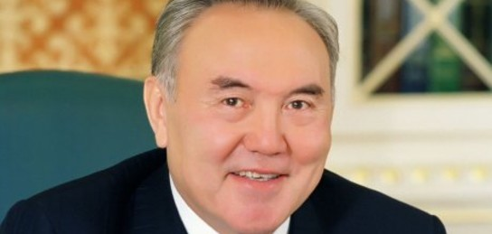

Көрші саясаткерлер:
Назарбаев Н.Ә

Нұрсұлтан Әбiшұлы Назарбаев (6 шілде 1940 жыл, Шамалған ауылы, Алматы облысы) — Қазақстанның мемлекет қайраткері, ғалым, Қазақстан Республикасының тұңғыш президенті. 1990 жылғы 24 сәуірден бастап, 2019 жылдың 20 наурызы аралығында Қазақстан президенті.
Бұрын ол Қазақ КСР-ның президенті болды. 2015 жылдың сәуір айында мерзімінен бұрын президент сайлауында бесінші президенттік мерзімге қайта сайланды, ресми деректерге сәйкес, 97,75% дауыс жинады. Қазақ КСР Министрлер Кеңесінің Төрағасы (1984-1989). 1962 жылдан бастап КОКП мүшесі. КОКП ОК (1986-1991) мүшесі; КОКП Орталық бақылау комиссиясының мүшесі (1981-1986). Қазақстан Компартиясы Орталық Комитетінің хатшысы (1979-1984 жж.), Қазақстан Компартиясы Орталық Комитетінің бірінші хатшысы (1989-1991). Солтүстік Қазақстан облысының КСРО Жоғарғы Кеңесінің 10-11-шақырылымының (1979-1989) мүшесі. КСРО халық депутаты (1989-1991).Қазақ ССР Жоғарғы Кеңесінің төрағасы (1990). Посткеңестік кеңістіктегі билік өкілдеріне ұзақтығы бойынша рекордшы: 1989 жылдың 22 маусымынан бастап Қазақстан Коммунистік партиясы Орталық Комитетінің бірінші хатшысы лауазымына тағайындалған күн - 28 жыл, 8 ай, 16 күн. «Ұлт көшбасшысы» ресми атауының иесі.
Путин В.В
Влади́мир Влади́мирович Пу́тин (род. 7 октября 1952, Ленинград, РСФСР, СССР[7][8]) — российский государственный и политический деятель, действующий президент Российской Федерации и верховный главнокомандующий Вооружёнными силами Российской Федерации с 7 мая 2012 года[9].
Ранее занимал должность президента с 31 декабря 1999 года по 7 мая 2008 года[10][11], в 1999—2000 и 2008—2012 годах находился на посту председателя правительства Российской Федерации.
Выпускник юридического факультета Ленинградского государственного университета. С 1977 года работал по линии контрразведки в следственном отделе Ленинградского управления КГБ[12]. С 1985 по 1990 год служил в резидентуре советской внешней разведки в ГДР, работал в Дрездене под прикрытием в должности директора дрезденского Дома дружбы СССР—ГДР. 20 августа 1991 года в звании подполковника уволился из КГБ СССР. В 1990—1991 годах работал помощником ректора ЛГУ по международным вопросам, советником председателя Ленинградского городского Совета народных депутатов Собчака, в 1991—1996 возглавлял Комитет по внешним связям мэрии Ленинграда, был советником мэра, первым заместителем председателя правительства Санкт-Петербурга. С августа 1996 года начал работать в Москве в должности заместителя управляющего делами президента Российской Федерации. После недолгого пребывания во главе ФСБ РФ и на посту секретаря Совета Безопасности Российской Федерации в августе 1999 года был назначен председателем Правительства Российской Федерации.
Си Цзиньпин
Си Цзиньпин (кит. трад. 習近平, упр. 习近平, пиньинь: Xí Jìnpíng, палл.: Си Цзиньпин; род. 15 июня[комм. 1] 1953, Пекин) — китайский государственный, политический и партийный деятель, действующий генеральный секретарь ЦК Коммунистической партии Китая[7], председатель Китайской Народной Республики с 14 марта 2013 года[8], председатель Центрального военного совета КНР[9]. Поскольку Си не только является главой государства, занимая пост председателя страны, но и занимает руководящие должности в партии и армии, иногда его называют «верховным лидером» Китая[10][11]. В 2016 году партия официально дала ему титул «основного» лидера[12]. Будучи генеральным секретарём партии, Си по должности занимает пост в Постоянном комитете Политбюро ЦК КПК — руководящем органе Китая.